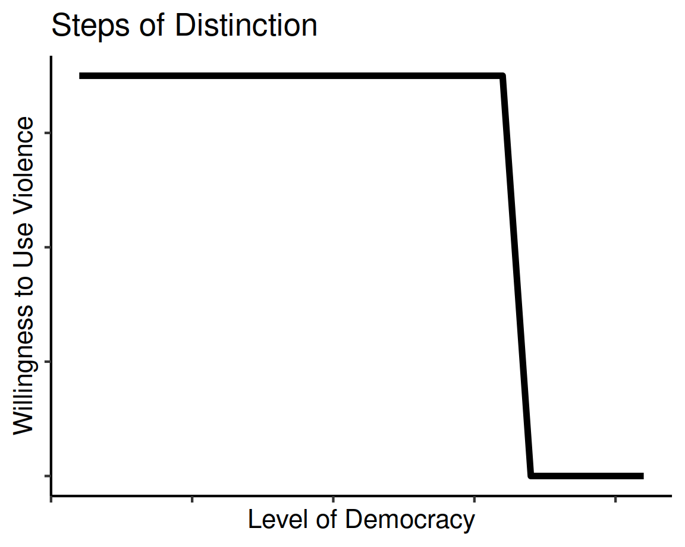
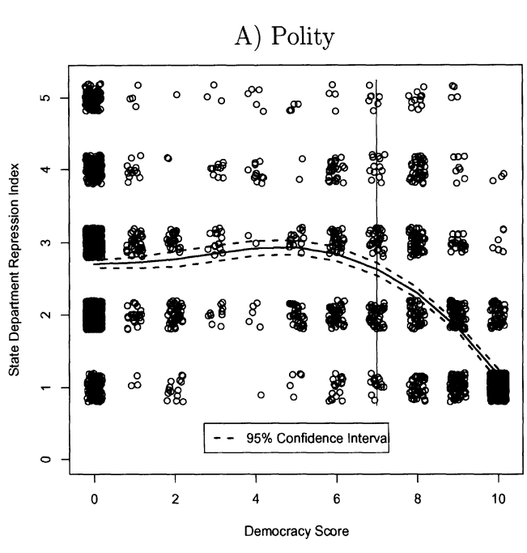
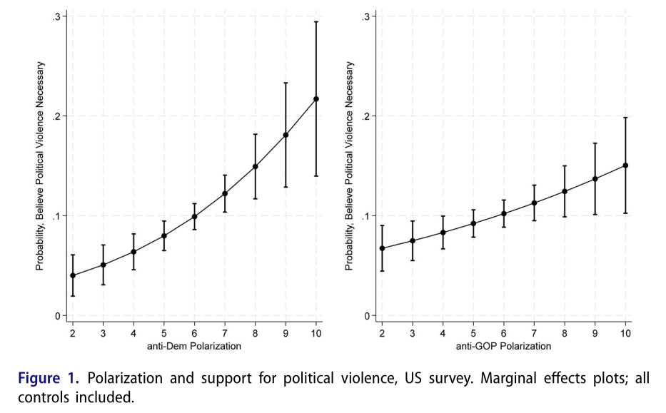
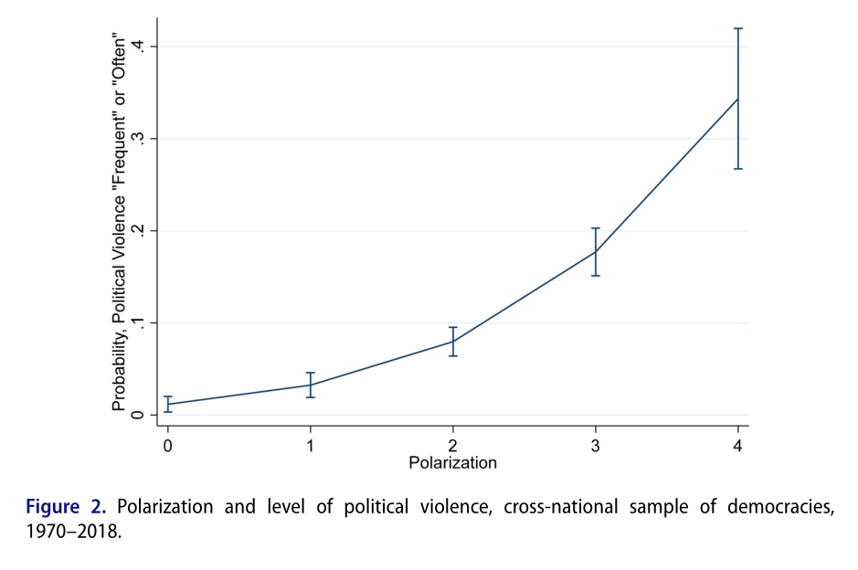

II. How and why do governments use violence against the people inside their borders?
Theories of “Political Violence”
Justin Leinaweaver (Fall 2025)


How does Piazza (2023) frame his research project?
Evaluate the Framing
Research question
Key concepts
Connections to the literature
Evaluate the Model: Polarization and Political Violence
Three sets of interactions:
Polarization and Dehumanization (p482)
Moral Polarization (p486)
Polarization and Group Mobilization (p489)
Interests
Individuals → good things for their in-group
Partisan elites → political survival / power
Institutions
Interests
Institutions
Interactions
Piazza (2023): Polarization and Dehumanization
Interests
Institutions
Interactions
↑ partisan polarization → demonization / dehumanization / “othering” of rival partisans
Partisan elite rhetoric may reinforce or worsen this dehumanization
Dehumanization fosters moral disengagement from members of opposing groups
Moral disengagement makes it more acceptable to target those members with discriminatory practices and violence
Piazza (2023): Moral Polarization
Interests
Institutions
Interactions
↑ partisan polarization → “moralized” or “zero-sum” political framings
↑ moral polarization → partisans accept (or demand) violence against the out-group members who are viewed with “anger, blame and disgust”
Piazza (2023): Polarization and Group Mobilization
Interests
Institutions
Interactions
↑ “social identity-based” sorting → political polarization
↑ political polarization (+ elite rhetoric) → supporters overcome collective action problems
↑ political polarization (+ elite rhetoric) → supporters willing to intimidate opposing partisans
Interests
Institutions
Interactions
Evaluate the Analyses: US Survey
Main Discussion (p492)
Online Appendix

Evaluate the Analyses: Cross-National Time-Series Data
Main Discussion (p498)
Online Appendix

Case Studies of Groups Reducing Political Violence in Democracies